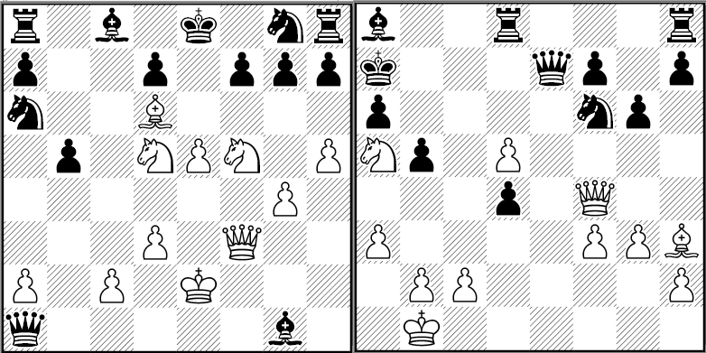
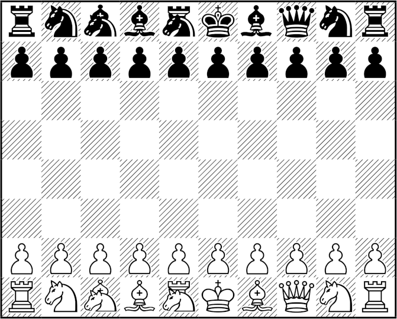

There has not been a truly open source font I would consider really attractive. Open Chess Font is close; it’s attractive and released under a Creative Commons license. But it’s not OFL nor public domain, and in some cases it’s better to have a font which doesn’t require attribution in PDF files using the font.
After trying to draw a Chess font myself, without much success, I have finally bit the bullet and have redrawn a well known Chess font which was released as “freeware”, without any formal licensing terms. Since the original font, which is itself based on pictures in a Chess book, was made as a non-commercial font, its OK to redistribute the font and almost certainly OK to use it in both commercial and non-commercial contexts.
However, the spirit of open source requires explicit permission. That
in mind, since fonts cannot be copyrighted in the US and many other jurisdictions, and since font copyrights have a 25 year term in Germany and England, a 15 year term in Ireland,
and since the font in question is over 25 years old, I have
redrawn the font and release it to the public domain.

I have also added support for a couple of fairy pieces for people who like to play or solve problems for Chess variants.
All of the files in this Git repository are public domain:
It is also available for download in this blog; this download has both the font, instructions to use the font, and even a Zillions file so that one can play Chess (or a few Chess variants) using low resolution bitmap renderings (the full resolution TTF file is also included):